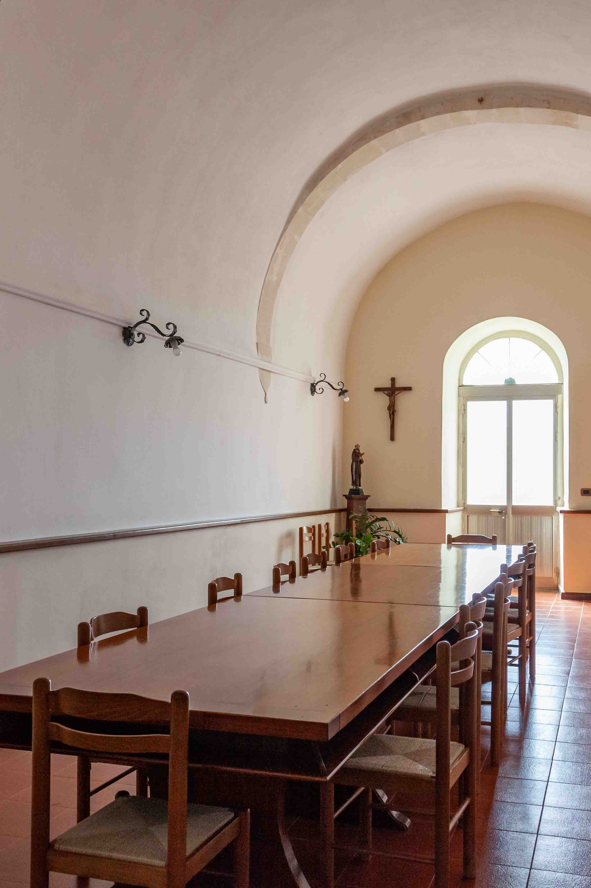

Foto di interni
Cattura l'anima degli spazi con il nostro occhio esperto! Esplora la bellezza e l'eleganza degli interni attraverso i nostri scatti. Ogni immagine racconta una storia di design, stile e funzionalità.

Convento Santa Maria di Gesù, Ispica
Un viaggio nell'anima di un luogo sacro: le nostre fotografie degli interni del convento Santa Maria di Gesù catturano la serenità e la bellezza intrinseca di questo spazio sacro.